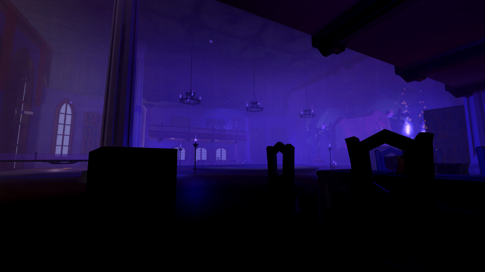

It's time for jaw-dropping, belief-suspending graphics. Volumika
is Roblox's first-ever high performance, fully dynamic, truly
global volumetric fog solution.
It's not just for the powerful PCs; Volumika runs excellently
with a wide range of graphics cards. It even achieves great
performance on high-end phones and other mobile devices.
A generational leap in graphics
Volumika is built upon innovative new ways to manipulate the
Roblox engine's rendering pipeline for maximum visual quality.
Featuring proper additive blending, smoothed intersections with
geometry, light sampling directly from Roblox's voxel grid, and
temporally stable results, no other previous technique comes
close to achieving a complete package this good looking.
Volumika also gives you greater artistic control compared to any
other technique. Fine tune almost any visual aspect, from fog
tinting to lighting influence to dithering characteristics.
What's more, it's consistent across every available lighting
engine on Roblox - most notably Future. Volumika puts the
final appearance of your scene back in your hands.
Breakthrough performance
Compared to previous volumetric lighting approximations and
techniques, Volumika not only delivers more accurate whole-room
dynamic lighting with softer edges and deeper volume, but it
does so while achieving category-leading framerates. It's so
much more performant that, for the very first time, you can ship
volumetric lighting as a viable option for your players.
Benchmarked on a NVIDIA GeForce GTX 1660 GPU and an Intel Core
i5-8600K CPU, Volumika is capable of outputting a solid 150
frames per second at 1440p, and capable of outputting 120 frames
per second to a Valve Index VR headset.
Indie-made, industry-changing
Volumika was researched and developed independently by Elttob as
part of a years-long project to bring fully-fledged, rigorously built
volumetric lighting techniques to Roblox. Representing thousands
of hours of research combined with specialised and deep
knowledge of Roblox's engine features and render pipeline,
Volumika sets the standard for all volumetric fog
implementations and unlocks entirely new capabilities for
creators.
Buy once, yours to use
Subscriptions and restrictive licenses have the potential to
harm creators when misused. That's why Volumika doesn't use
them. With Volumika, you can use your version forever - patches
included - and pay for new features on your own terms. It's
a fairer model that simultaneously gives you freedom and helps
ensure fair compensation - everyone wins.

Light your worlds with Volumika
Volumika is sold via itch.io, an indie-friendly platform that
pays creators fairly and provides excellent support for their
community. In a world of unaccountable business and faceless
support teams, we are grateful for their continued good will and
support.
Aktive for Roblox Studio
Preview your Volumika volumetric lighting while you work. Aktive
connects to your Volumika installation and runs it inside Roblox
Studio, empowering you to make quicker and better informed
decisions about your lighting.